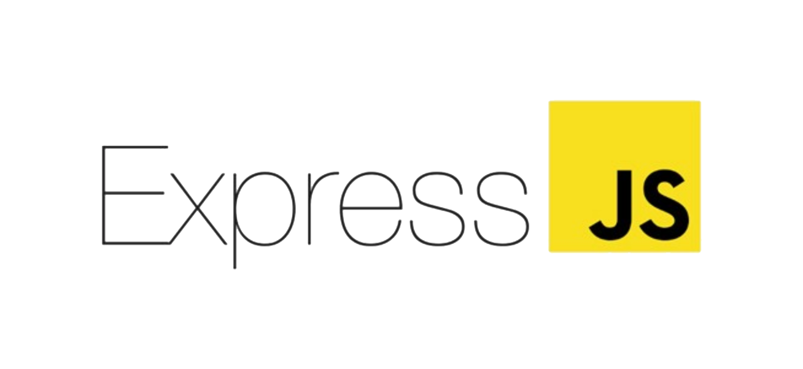

- ¿ Qué es Express JS ? -

Express es el framework web más popular de Node, y es la librería subyacente para un gran
número de otros frameworks web de Node populares. Proporciona mecanismos para:
-
Escritura de manejadores de peticiones con diferentes verbos HTTP en diferentes
caminos URL (rutas).
-
Integración con motores de renderización de "vistas" para generar respuestas
mediante la introducción de datos en plantillas.
-
Establecer ajustes de aplicaciones web como qué puerto usar para conectar, y la
localización de las plantillas que se utilizan para renderizar la respuesta.
-
Añadir procesamiento de peticiones "middleware" adicional en cualquier punto
dentro de la tubería de manejo de la petición.
A pesar de que Express es en sí mismo bastante minimalista, los desarrolladores han creado
paquetes de middleware compatibles para abordar casi cualquier problema de desarrollo web.
Hay librerías para trabajar con cookies, sesiones, inicios de sesión de usuario, parámetros URL,
datos POST, cabeceras de seguridad y muchos más. Puedes encontrar una lista de paquetes middleware
mantenida por el equipo de Express en Express Middleware (junto con una lista de algunos de los
paquetes más populares de terceros).
Nota: esta flexibilidad es una espada de doble filo. Hay paquetes de
middleware para abordar casi cualquier problema o requerimiento, pero deducir cuáles son los paquetes
adecuados a usar algunas veces puede ser un auténtico reto. Tampoco hay una "forma correcta" de estructurar una
aplicación, y muchos ejemplos que puedes encontrar en la Internet no son óptimos, o sólo muestran
una pequeña parte de lo que necesitas hacer para desarrollar una aplicación web.
- ¿ Es Express dogmático ? -
Los frameworks web frecuentemente se refieren a sí mismos como "dogmáticos" ("opinionated")
o "no dogmáticos" ("unopinionated").
Los frameworks dogmáticos son aquellos que opinan acerca de la "manera correcta" de gestionar
cualquier tarea en particular. Ofrecen soporte para el desarrollo rápido en un dominio en particular
(resolver problemas de un tipo en particular) porque la manera correcta de hacer cualquier cosa está
generalmente bien comprendida y bien documentada. Sin embargo pueden ser menos flexibles para resolver
problemas fuera de su dominio principal, y tienden a ofrecer menos opciones para elegir qué componentes
y enfoques pueden usarse.
Los framewoks no dogmáticos, en contraposición, tienen muchas menos restricciones sobre el modo mejor
de unir componentes para alcanzar un objetivo, o incluso qué componentes deberían usarse. Hacen más fácil
para los desarrolladores usar las herramientas más adecuadas para completar una tarea en particular, si bien
al coste de que necesitas encontrar esos componentes por tí mismo.
Express no es dogmático, transigente. Puedes insertar casi cualquier middleware compatible que te guste
dentro de la cadena de manejo de la petición, en casi cualquier orden que te apetezca. Puedes estructurar
la app en un fichero o múltiples ficheros y usar cualquier estructura de directorios. ¡Algunas veces puedes
sentir que tienes demasiadas opciones!
- Ejemplo de código -
Hola Mundo! - en Express
Este sería uno de los programas más conocidos en el mundo de la programación. El clásico y tradicional ejemplo de Hola Mundo!
var express = require('express');
var app = express();
app.get('/', function(req, res) {
res.send('Hola Mundo!');
});
app.listen(3000, function() {
console.log('Aplicación ejemplo, escuchando el puerto 3000.');
});